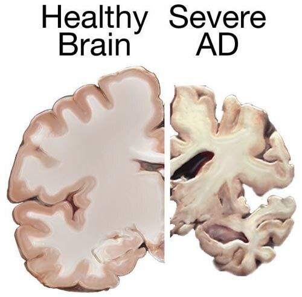

Treat, rehabilitate, support
Thrombolysis and thrombectomy, antiseizure medicines, levodopa, deep brain stimulation, anti-CGRP drugs and rehabilitation.
Stroke
 Stroke
StrokeThrombolysis and thrombectomy
The two treatments that can reverse an ischaemic stroke if given in time: a medicine that dissolves the clot and a catheter that removes it. Time windows, results and risks.
Read → Stroke
StrokeStroke units and telestroke
The stroke unit cares for the patient in the first days with specialist staff and continuous monitoring; telestroke brings the neurologist to small hospitals. Two measures that save lives and reduce disability.
Read →StrokeStroke code
What the stroke code is, how it is activated by calling 112, what happens minute by minute from the call to thrombolysis or thrombectomy, and what you can do to save time.
Read → Stroke
StrokeStroke prevention
How to avoid a first stroke and, above all, another one after the first. Blood pressure, cholesterol, antiplatelets, anticoagulants, carotid surgery and habits, with the targets set by the guidelines.
Read →Medicines
 Medicines
MedicinesAntiseizure medicines
More than twenty medicines that prevent seizures. How they are chosen, which side effects to watch for, why they must not be stopped suddenly and what happens in pregnancy.
Read → Medicines
MedicinesLevodopa and Parkinson's medicines
Levodopa, discovered in the 1960s, is still the most effective treatment for Parkinson's. How it works, what fluctuations are and which other medicines exist.
Read → Medicines
MedicinesMigraine treatments
From ibuprofen and triptans to anti-CGRP antibodies and gepants: how to treat an attack, when to start preventive treatment and what has changed in the last decade.
Read → Medicines
MedicinesMultiple sclerosis treatments
From the interferons of the 1990s to high-efficacy monoclonal antibodies: how disease-modifying medicines work, how they are chosen and what is new.
Read → Medicines
MedicinesAnti-amyloid antibodies
Lecanemab and donanemab clear amyloid plaques from the brain and slightly slow early Alzheimer's disease. A modest benefit, real risks and strict eligibility.
Read → Medicines
MedicinesBotulinum toxin
The most potent poison known, used in tiny doses, relaxes overactive muscles. The standard treatment for dystonias, spasticity and chronic migraine.
Read → Medicines
MedicinesGene and RNA therapies
Medicines that correct the effect of a faulty gene: antisense oligonucleotides, viral gene therapy and new editing tools. They have already transformed spinal muscular atrophy and are beginning to reach other diseases.
Read →
MedicinesMedicines for dementia
Donepezil, rivastigmine, galantamine and memantine: what they are for, how much they help, what side effects they have and which other medicines are used for the symptoms of dementia.
Read → Medicines
MedicinesTreatment of neuropathic pain
Pain that comes from a damaged nerve does not respond to ordinary painkillers. First-line medicines, patches, options if they fail and non-drug measures.
Read → Medicines
MedicinesTreatment of insomnia and narcolepsy
Cognitive behavioural therapy is the first treatment for chronic insomnia; sleeping pills only in the short term. In narcolepsy, medicines that keep you awake and control cataplexy.
Read → Medicines
MedicinesTreatment of vertigo
Repositioning manoeuvres for positional vertigo, vestibular rehabilitation, medicines for only a few days, and treatment of Ménière's disease and vestibular migraine.
Read → Medicines
MedicinesTreatment of nervous system infections
Bacterial meningitis and herpes encephalitis are emergencies treated before the diagnosis is confirmed. Antibiotics, aciclovir, corticosteroids, vaccines and prevention in close contacts.
Read →Surgery and neuromodulation
 Surgery and neuromodulation
Surgery and neuromodulationDeep brain stimulation
Electrodes implanted in the brain connected to a generator, like a brain pacemaker. It reduces the symptoms of advanced Parkinson's, essential tremor and dystonia.
Read → Surgery and neuromodulation
Surgery and neuromodulationNeurosurgery
Surgery of the brain, spinal cord, spine and nerves. From the first modern surgeons to navigation, awake surgery and radiosurgery.
Read → Surgery and neuromodulation
Surgery and neuromodulationNon-invasive neuromodulation
Transcranial magnetic stimulation, electrical stimulation and other techniques that change brain activity from outside the skull. What they are used for and what is still research.
Read →Rehabilitation
 Rehabilitation
RehabilitationNeurorehabilitation
Physiotherapy, occupational therapy, speech and language therapy and neuropsychology to recover functions after a stroke or injury, or in chronic diseases. The brain can reorganise itself, especially if training starts early.
Read → Rehabilitation
RehabilitationBrain-computer interfaces
Devices that read brain activity and turn it into commands for a computer, a robotic arm or a synthetic voice. Real advances in people with paralysis, and what is still a promise.
Read →RehabilitationTreatment of spasticity
The muscle stiffness that develops after a stroke, in multiple sclerosis, spinal cord injury or cerebral palsy. Physiotherapy, oral medicines, botulinum toxin and the baclofen pump.
Read →